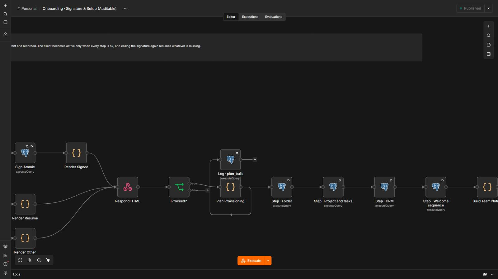
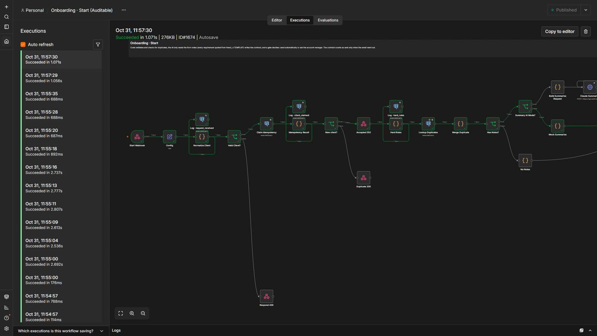
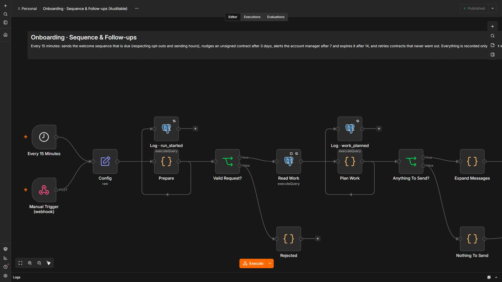

From closed deal to project kicked off, without copying data by hand.
When a client closes, the system validates the data, the AI turns the form notes into requirements quoted from the text, and a template writes the contract. It goes out alone only if everything is standard; otherwise the account manager approves. Once signed, the folder, the project with its tasks, the CRM stage and the welcome sequence are set up step by step, and can be resumed.
5 steps, and who decides each one.
- Code decides
Validate and check duplicates
Package, amount and dates are checked, and a client that already exists is flagged.
- AI reads
Read the form notes
The AI lists what the client asked for, each requirement quoted from their notes. Code drops anything that is not in the text.
- Code decidesA person
Template contract, human gate
A template writes the contract, never the AI. It goes out alone only if everything is standard; otherwise the account manager approves.
- Code decides
One-time signature
The link only shows the contract. Signing is a POST with a one-time token that expires.
- Code decides
Set up, step by step
Folder, project and tasks, CRM, welcome sequence and team notice, each idempotent and recorded. Signing again resumes what is missing.
3 workflows
Onboarding · Start
A closed client enters: code validates and checks for duplicates, the AI reads the form notes, a template writes the contract and a gate sends it or asks the account manager.
Step by step
- Validates the data and the package; one client id never runs twice.
- Hard rules flag special terms in the notes (discount, refund, exclusivity, NDA, penalties), prompt injection and an existing client with the same email or company.
- The AI lists what the client asked for; every requirement must be quoted from the notes and code drops what is not in the text.
- A fixed template writes the contract and a gate decides: send automatically, or ask the account manager (email approval, fail closed).
- Saves the client, the contract and a one-time signature token generated in Postgres, then sends the contract; it counts as sent only when the email went out.
Onboarding · Signature & Setup
Shows the contract, signs with a one-time token and sets the client up step by step; calling it again resumes whatever is missing.
Step by step
- The link only SHOWS the contract on a GET; signing is a POST with the one-time token.
- Code verifies the token, the expiry and the client status; a repeated signature is idempotent and an interrupted setup is resumed.
- One atomic statement signs: the token must match, no earlier signature, not expired.
- Folder, project and tasks (template plus verified requirements, in business days), CRM stage, welcome sequence and team notice: each step idempotent and recorded.
- The client becomes active only when all five steps are ok; otherwise it fails loudly.
Onboarding · Sequence & Follow-ups
Sends the welcome sequence on schedule and chases unsigned contracts: a nudge at 3 days, an alert at 7, expiry at 14.
Step by step
- Reads due welcome messages, unsigned contracts and contracts that never went out.
- Code respects opt-outs, cancelled clients and the sending hours; deferred messages are retried.
- Nudges an unsigned contract once, alerts the account manager once and expires it after 14 days.
- Retries a contract that never went out.
- Records everything only after it was sent.
The system in n8n.
Screenshots of the actual editor and of a real execution, from the local test environment. Click one to open it full size.





